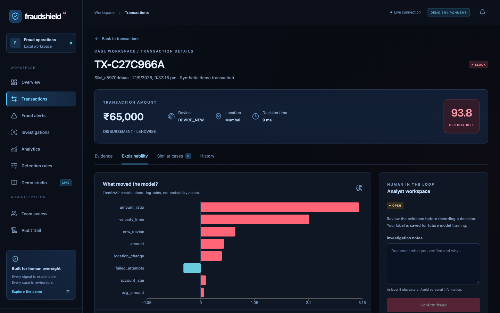

FRAUDSHIELD AI / 01
FraudShield AI
Real-time fraud intelligence.
Every signal explained.
- Digital lending · hybrid detection · human investigation
- Local interview demonstration | FastAPI + React
FRAUDSHIELD AI / 02
The problem
Static rules see fragments. Fraud spans behavior.
- Unusual amounts may be legitimate; a familiar device may be compromised.
- Signals need context: history, velocity, device and location.
- Investigators need evidence they can inspect, not an unexplained score.
FRAUDSHIELD AI / 03
The solution
Detect → score → explain → investigate → learn
- Combine supervised prediction, deterministic rules and behavioral signals.
- Persist the features and evidence behind every policy decision.
- Keep the analyst in control of the investigation label.
FRAUDSHIELD AI / 04
Local architecture
Five services. One complete workflow.
FRAUDSHIELD AI / 05
The decision pipeline
A transaction becomes an auditable decision.
- Validate identity, role, amount and request schema.
- Derive features from committed history and Redis windows.
- Run ML + rules + behavior + anomaly + pgvector retrieval.
- Aggregate the score; commit evidence; notify the dashboard.
FRAUDSHIELD AI / 06
Machine learning
Train and measure. Never hardcode predictions.
- 18,000 synthetic examples; 60 / 20 / 20 train-validation-test split.
- XGBoost model selection uses validation PR-AUC only.
- Isolation Forest detects departures from legitimate training behavior.
- No real-world fraud prevalence or deployment performance is claimed.
FRAUDSHIELD AI / 07
Explainability
Show why the model moved.
- TreeSHAP contributions are measured in log-odds.
- Contributions + base reconstruct the actual model prediction.
- Local prose cites captured evidence; it is explicitly not LLM output.

FRAUDSHIELD AI / 08
Historical cases
Similar patterns add context, not certainty.
- pgvector executes actual cosine similarity search.
- 256-dimensional local hashing vectors represent pattern text.
- Only confirmed cases from the matching embedding provider are retrieved.
- Reference cases are labeled synthetic; analyst confirmations enter retrieval.
FRAUDSHIELD AI / 09
Security and consistency
Make the boundaries explicit.
- JWT + bcrypt + ADMIN / ANALYST / VIEWER roles.
- Parameterized SQL, strict validation and minimized identifiers.
- Idempotency protects retries; per-customer locks protect velocity counts.
- Audit events capture access, policy edits and investigation decisions.
FRAUDSHIELD AI / 10
The dashboard
A workspace for fraud operations.
FRAUDSHIELD AI / 11
Live demonstration
Normal → review → block → investigate
- Known-device repayment → ALLOW.
- Unusual amount on familiar device → REVIEW.
- New device + new city + real burst → BLOCK.
- Confirm fraud, or mark legitimate and retain the original policy output.
FRAUDSHIELD AI / 12
Measured results
Synthetic holdout performance — not a production claim.
- Precision 88.83% | Recall 88.38% | F1 88.61%.
- PR-AUC 0.9285 | ROC-AUC 0.9779.
- False positive rate 1.37% | False negative rate 11.62%.
- The dashboard separately reports selected analyst-review feedback.
FRAUDSHIELD AI / 13
Responsible AI and future scope
A useful prototype has honest limits.
- Risk is not proof; human review can correct false positives.
- No funds are moved, no creditworthiness is assessed, no users are banned.
- Next: representative data, calibration, fairness audits and durable jobs.
- At scale: shared events, vector indexes, model registry and rollback.
FRAUDSHIELD AI / 14
FraudShield AI
From reactive rules to explainable fraud intelligence.
- Real-time detection. Persistent evidence. Human oversight.
- Run the complete demo locally: http://localhost:3000
- Read the code, repeat the tests, inspect every decision.